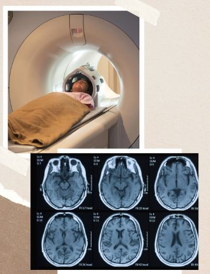

What we provide

Full body checkups

Scans and Reports
Video Consultants
Customer Reviews
Very easy to book,maintain history. Hassle free from older versions of booking appointment via telephone.. Thanks NearCare for making it simple.
~NEHA
Very helpful. Far easier than doing same things on computer. Allows quick and easy search with speedy booking. Even maintains history of doctors visited.
~NISHU
Very good app. Well thought out about booking/ rescheduling/canceling an appointment. Also, Doctor's feedback mechanism is good and describes all the basics in a good way